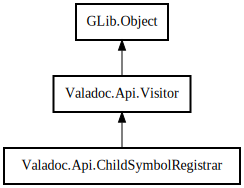

ChildSymbolRegistrar
Object Hierarchy:

Description:
public class ChildSymbolRegistrar :
Visitor
Content:
Creation methods:
Methods:
Inherited Members:
All known members inherited from class Valadoc.Api.Visitor
All known members inherited from class GLib.Object